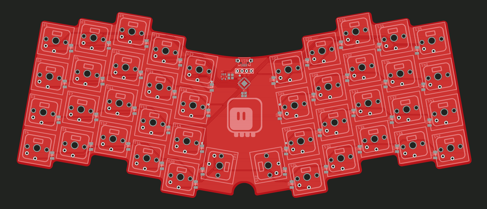
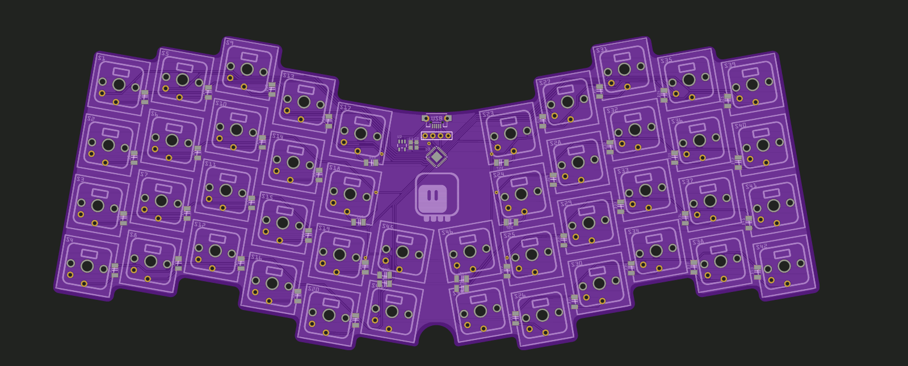
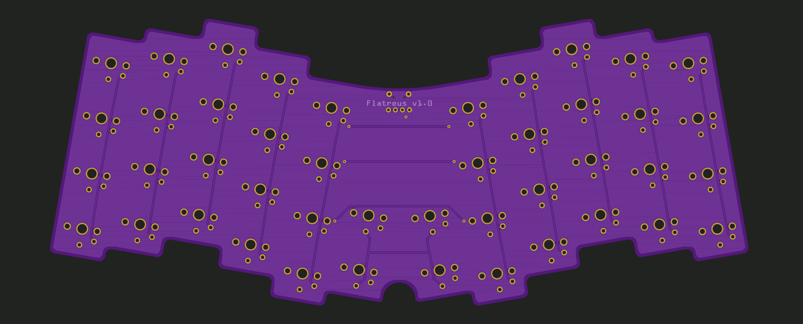

Down the Rabbit Hole¶
Published on 2020-09-27 in Flatreus Keyboard.
I usually get an urge to buy or make a new keyboard around this time of the year, but it usually ends in disappointment, as I have very specific requirements for my keyboards: they have to be low-profile, no wobbly keys, ins in del in proper places, preferably tenkeyless, etc. Making them is easier than finding ready ones, but my last attempt with Flounder Keyboard didn’t work that well due to too much experimenting on my side, and I went back to my current best hv-kb390l .
But this year I decided to experiment with sub-40% keyboards, just because they are cheaper to make than full-size ones, due to small number of keys, and after making Dorsch 40k Keyboard I was surprised how comfortable they are! That was a bit too small, though, so I upgraded it to Dorsch 48k Keyboard and that’s what I’m using right now. For the first time in my life I’m properly typing with all fingers on on the home row, and I enjoy it a lot! Thinking about how it could be improved further, I decided that splitting it, to put the hands further apart is a good idea, however, I want to keep it in one piece.
I did experiment a bit with a minimal keyboard back when I assembled the 5plit Keyboard Clone , but the default layout that this keyboard had didn’t resonate with me, and also having the two halves separate doesn’t work so well for me, as they tend to wander all over my desk, and then I have problems finding the right hand one after moving my mouse.
So the next steps on my keyboard journey are in two directions: first, I decided to scavenge the failed Flounder Keyboard for switches and re-build it as an ergonomic Turbot Keyboard — that project is already ongoing, and I’m waiting for the PCB for it. I’m not sure it will be usable, as I’m not a big fan of those switches, and being that flat doesn’t necessarily work for such a large keyboard. We will see. So, at the same time, I’m also designing a flat Atreus , which is basically what I’m using right now with the Dorsch 48k, but ergonomic and with more keys for the thumbs.
This project will probably take a little bit longer, since I don’t have the switches for it, and I don’t want to make another order just yet. I might scavenge the Dorsch 40k Keyboard for it in the end, but I would rather not. So I will design the PCB and let it sit for a bit — this way there is also a chance that the design can be improved with what I learned from the Turbot.
A quick take on the PCB looks like this:
I posted it on Mastodon, but then the original author of Atreus chimed in, and told me they improved the design by adding two more thumb keys. So I followed their advice and updated the design:
 I’m mostly happy with it (found a couple of mistakes since making this render, but it’s mostly the same), and I think I will go with it in the end, but I will give it some more time to sit there and ripen.
And yes, it does look a little bit like a bat, so maybe it fits the Halloween theme.